Introduction
L’examen macroscopique consiste à observer l’urine à l’œil nu avant toute analyse chimique ou microscopique. Il fournit des indices rapides sur l’hydratation, la fonction rénale, la présence de pigments, de cristaux, de sang ou d’une infection.
Les quatre paramètres principaux sont :
- la couleur ;
- la clarté ;
- l’odeur ;
- le volume urinaire sur 24 heures.
Couleur de l’urine
La couleur normale de l’urine varie du jaune pâle au jaune ambré. Elle dépend principalement de la concentration en urochrome, un pigment dérivé du métabolisme de l’hémoglobine. Une urine très claire indique souvent une hydratation abondante, tandis qu’une urine foncée reflète une concentration élevée.
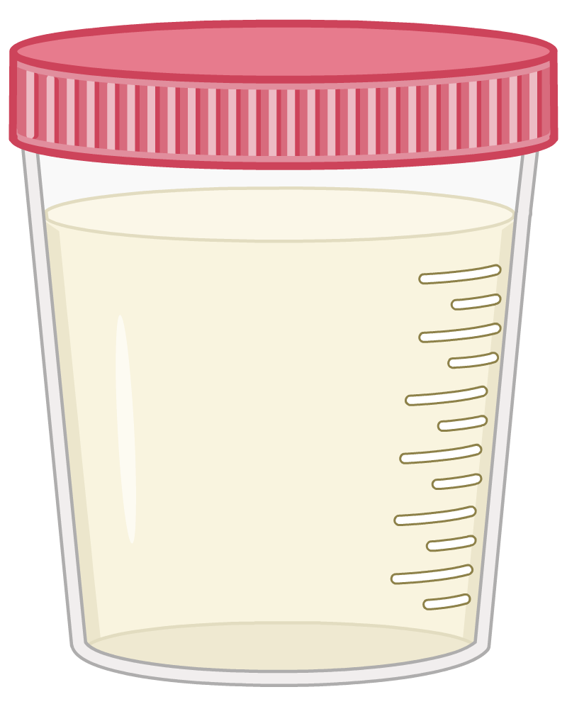
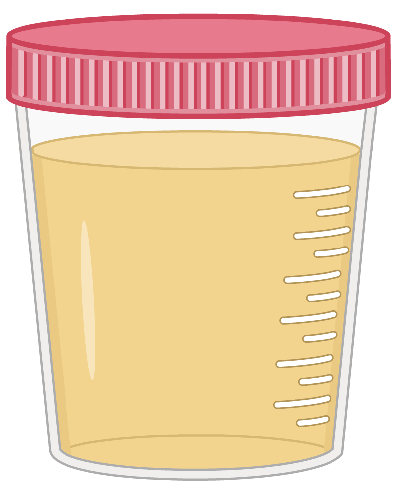
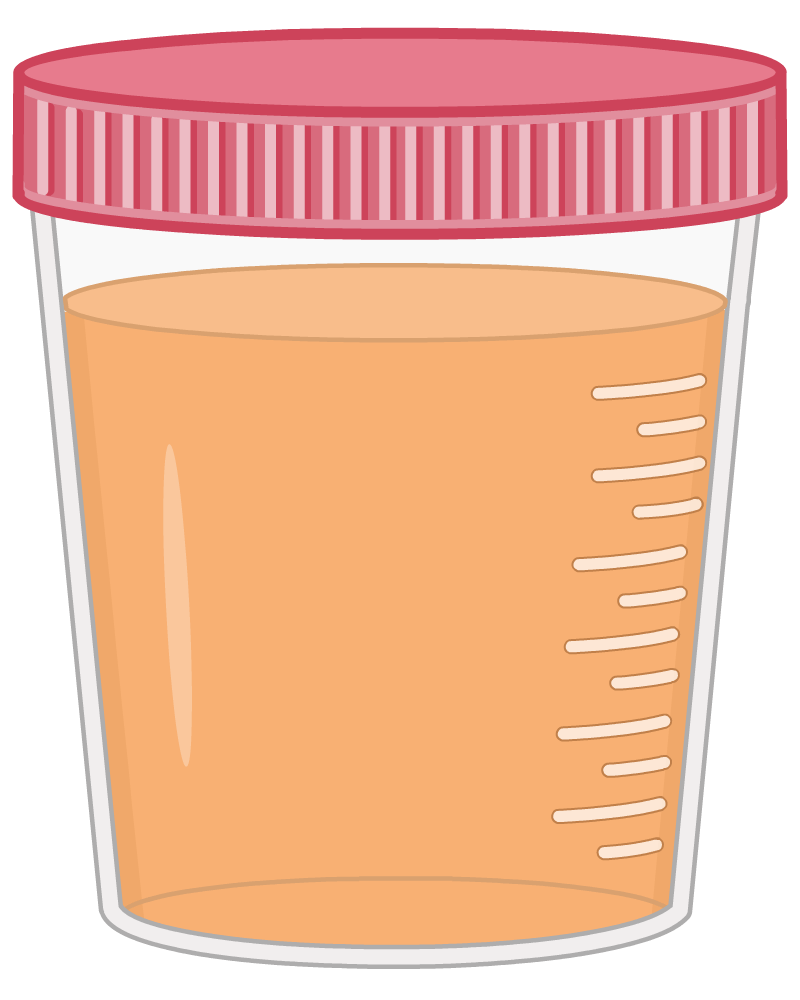
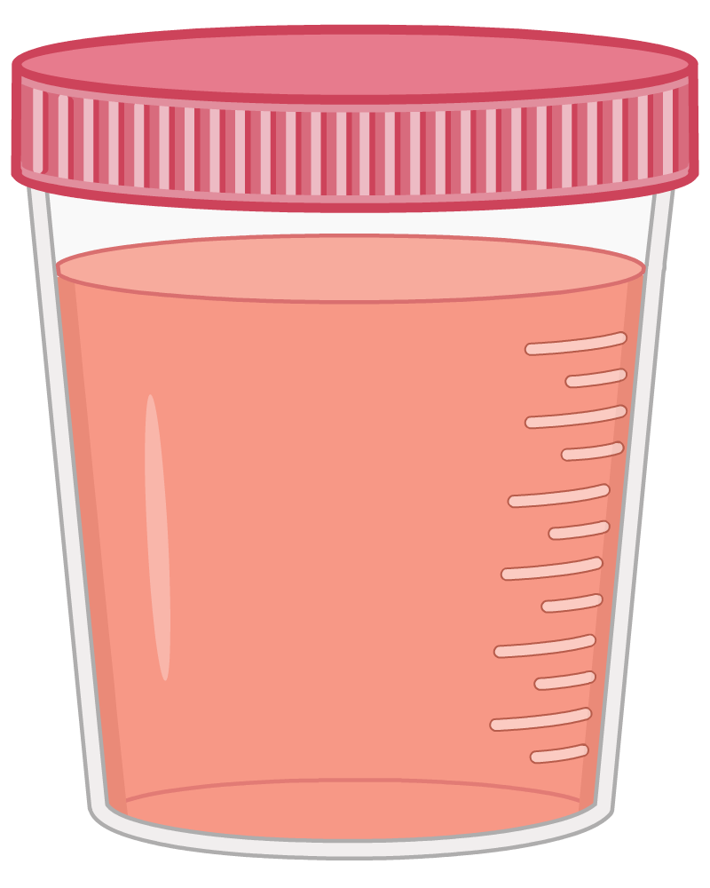
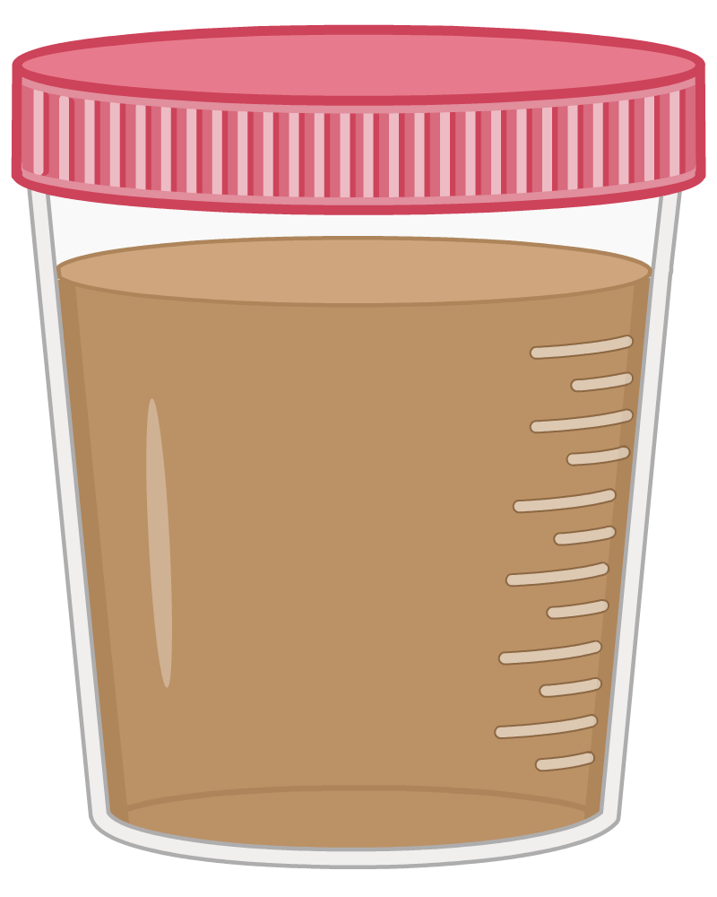
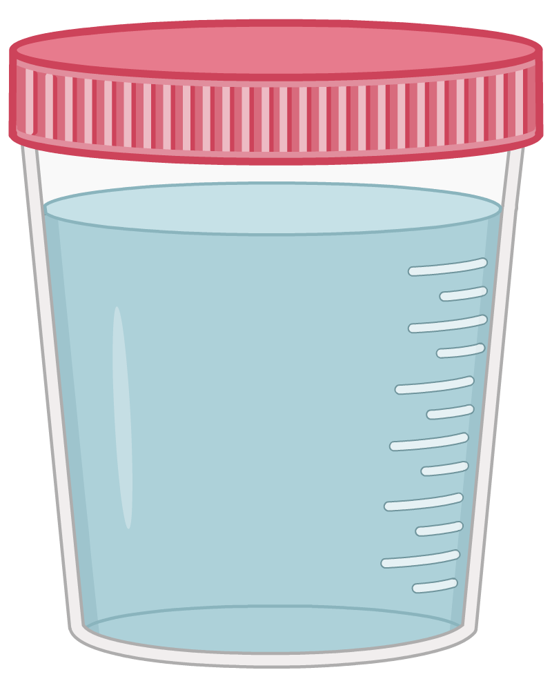
Interprétation clinique
- Jaune très pâle : hydratation élevée.
- Jaune foncé : déshydratation.
- Orange : carotènes, rifampicine, déshydratation sévère.
- Rouge : hématurie, betteraves, myoglobine.
- Brun : bilirubine, myoglobine, certains médicaments.
- Vert / bleu : infections à Pseudomonas, colorants.
Simulation interactive
Clarté de l’urine
Une urine normale est généralement claire ou légèrement trouble. La turbidité peut être causée par des cellules, des bactéries, des cristaux ou du mucus.
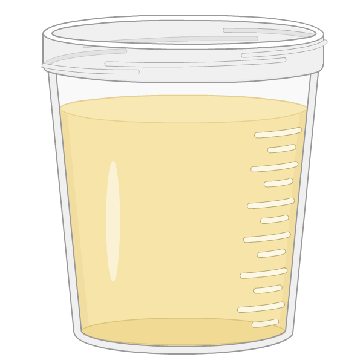
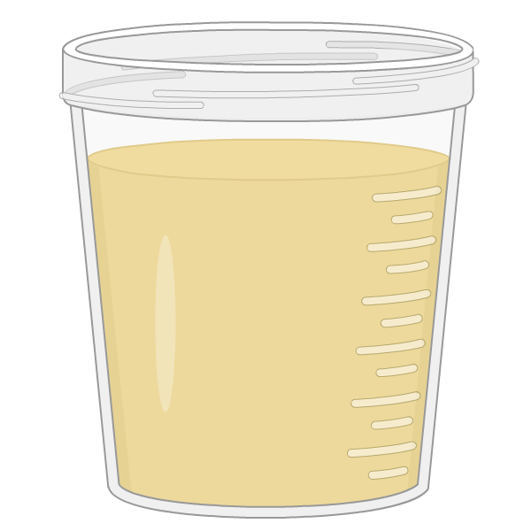
Causes possibles de turbidité
- Leucocytes : infection urinaire.
- Bactéries : cystite, pyélonéphrite.
- Cristaux : oxalates, phosphates.
- Protéines : protéinurie importante.
Simulation interactive
Odeur de l’urine
L’urine fraîche a une odeur légère et caractéristique. Une odeur anormale peut orienter vers certaines conditions métaboliques ou infectieuses.
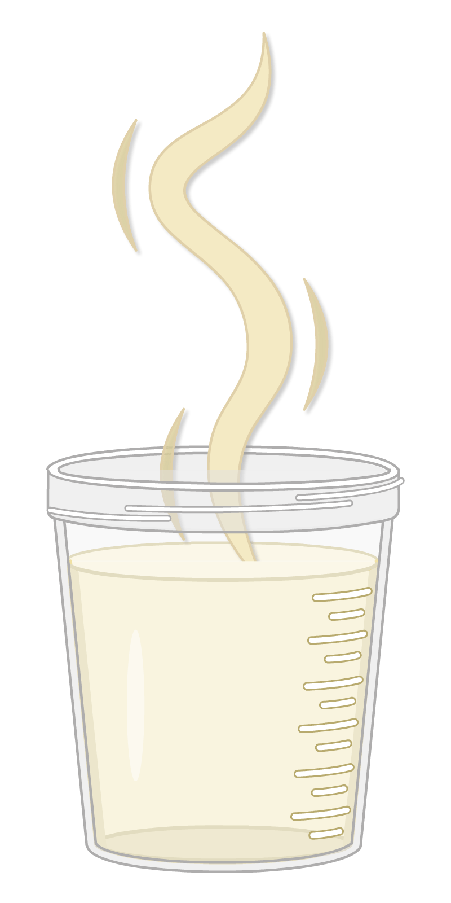
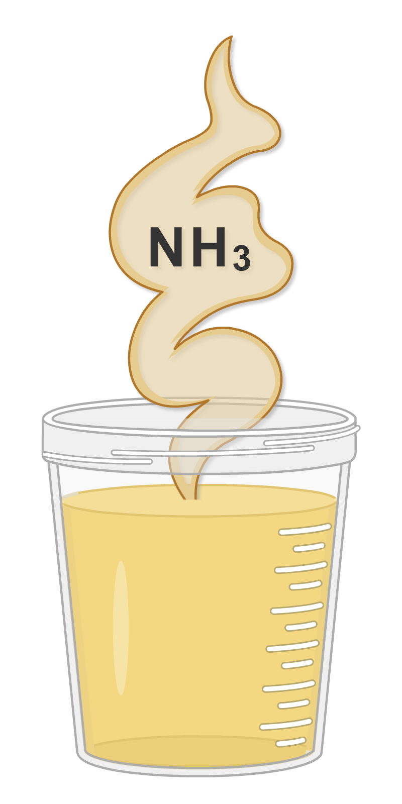
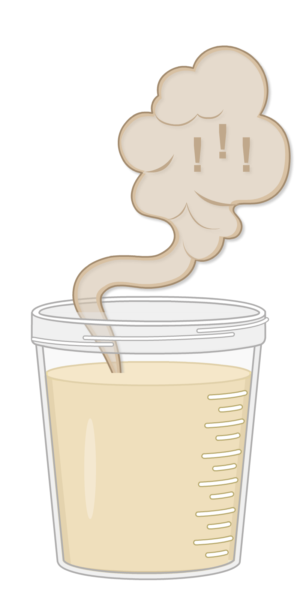
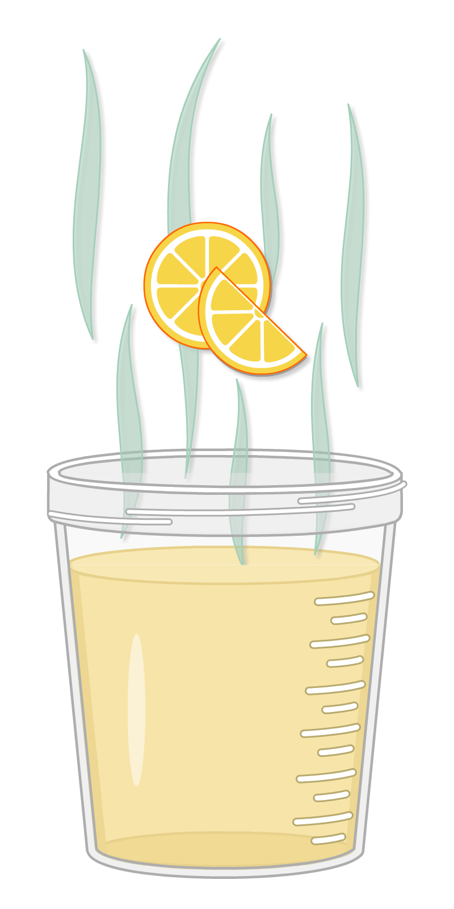
Interprétation clinique
- Odeur sucrée : cétonurie, diabète non contrôlé.
- Odeur fétide : infection bactérienne.
- Odeur d’ammoniac : urine stagnante, déshydratation.
- Odeur de sirop d’érable : maladie du sirop d’érable (MSUD).
Simulation interactive
Volume urinaire sur 24 heures
Le volume urinaire quotidien reflète l’équilibre hydrique, la fonction rénale et certains déséquilibres hormonaux. La valeur normale se situe entre 800 et 2000 mL/24 h.
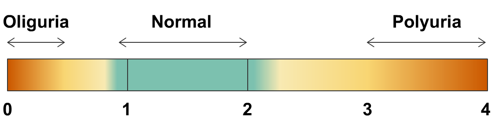
Interprétation clinique
- Oligurie (< 400 mL) : déshydratation, insuffisance rénale aiguë.
- Anurie (< 100 mL) : obstruction, insuffisance rénale sévère.
- Polyurie (> 2500 mL) : diabète, diurèse osmotique, polydipsie.